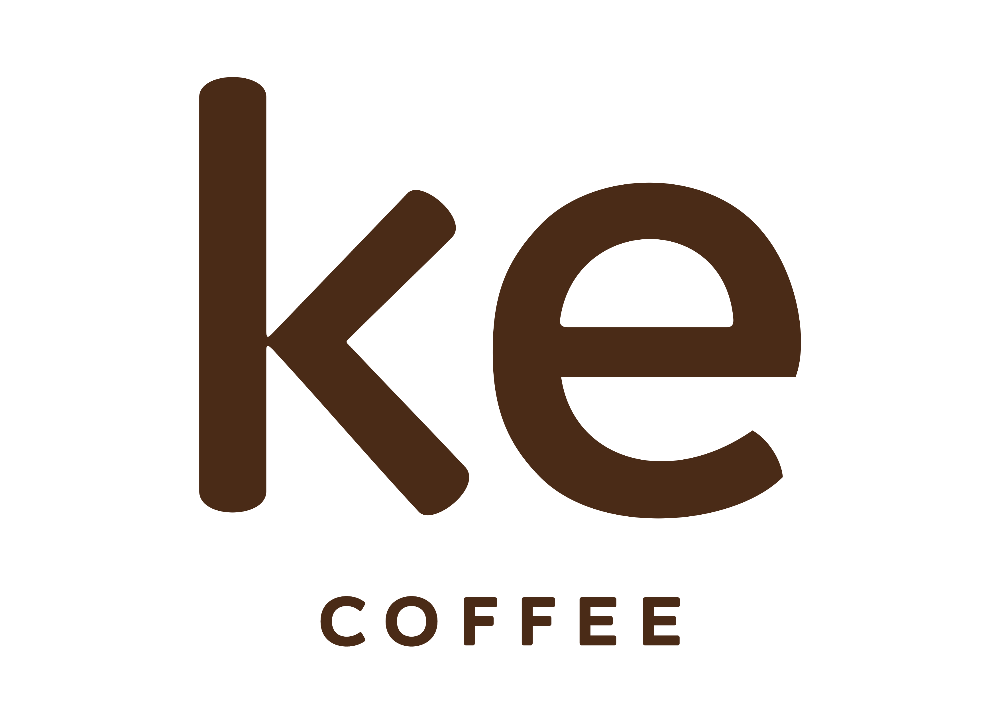

"Sabor que inspira, aroma que coquista"Cardápio do dia:
O que é o café CATUAÍ? 🌱
O Catuaí é uma variedade de café muito popular no Brasil, conhecido por:
Sabor equilibrado: Tem um gosto suave, um pouco adocicado e às vezes com notas
defrutasou chocolate.
Cor vermelha ou amarela: Existem dois tipos principais: Catuaí Vermelho (trabalhamos
com o vermelho) e Catuaí
Amarelo
(a cor
é da
cereja do café quando madura).
Sabor (descrição): Melaço, Manteiga, Floral, Hibisco, Uva e Laranja
Acidez (descrição): Cítrica
Finalização (descrição): Doce
Corpo (Descrição): Cremoso
Para mais detalhes do nosso café CATUAÍ
O que é o café NOVO MUNDO? 🌱
O Novo Mundo (também chamado de Mundo Novo) é uma variedade de café arábica muito famosa no
Brasil.
Ele surgiu de um cruzamento natural entre duas outras variedades (o Bourbon Vermelho e o
Sumatra) e
foi "descoberto" no estado de São Paulo, na região de Mundo Novo (daí o nome!).
Sabor equilibrado: Tem um gosto suave, com um toque adocicado e às vezes notas de
chocolate ou
castanha, ótimo para quem não gosta de cafés muito ácidos.
O que é o café BOURBON? 🌱
É uma variedade nobre de café arábica, que surgiu na Ilha Bourbon (hoje Ilha da Reunião,
perto de
Madagascar) no século XVIII. Ele veio parar no Brasil e se tornou um dos mais apreciados
pelos
amantes de café.
Grãos de alta qualidade: Os grãos são mais densos e produzem uma bebida mais
encorpada.
Muitos cafés gourmet ou especiais usam Bourbon.
Baixa produtividade: Produz menos grãos que outras variedades (como o Catuaí ou Novo
Mundo), mas a qualidade compensa.
Sabor (descrição): Melado de Cana, Rapadura, Floral e Mel
Acidez (descrição): Cítrica
Corpo (Descrição): Aveludado
Para mais detalhes do café BOURBON
O que é o café ARARA? 🌱
É uma variedade de café arábica desenvolvida no Brasil, conhecida por dois detalhes
especiais:
Grãos: amarelos vibrantes (quando maduros, parecem pequenas frutinhas
douradas).
Sabor: Sabor adocicado e suave – ótimo para quem não gosta de café muito amargo ou
ácido
Baixa acidez: Ótimo para estômagos sensíveis.
Por que ele é especial?
Gourmet: Muitas cafeterias usam Arara em blends ou como café especial (single
origin).
Sabor (descrição): Frutas Amarelas, Frutas Tropicais, Floral, Flores Dama da Noite, Coco, Papaya Melaço e Mel
Acidez (descrição): Cítrica
Finalização (descrição): Doce
Corpo (Descrição): Licoroso
Para mais detalhes do café ARARA